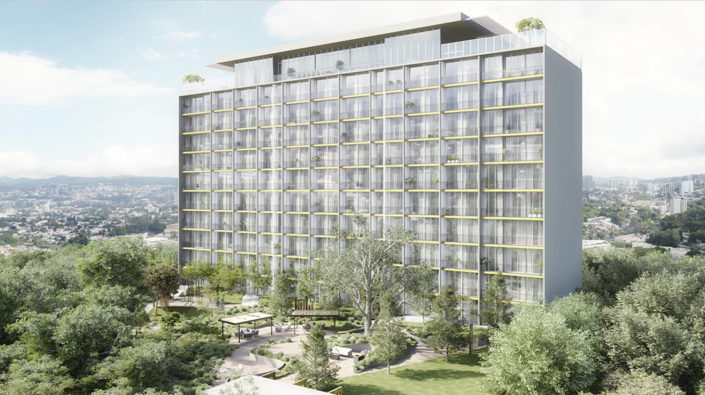

Recomendado NLDIdeal para vivir
🏖️
Retirate donde nacieron tus recuerdos. Nosotros nos encargamos de todo lo demás — sin costo para vos.
En EE.UU., el jubilado promedio gasta una buena parte de su Social Security solo en gastos médicos de bolsillo. En El Salvador, ese mismo cheque te abre puertas que en US ya no existen.
Somos salvadoreños viviendo en El Salvador. Conocemos el terreno, los desarrolladores, los abogados y las zonas. Diseñamos el proceso que quisiéramos para nuestra propia familia.


No encontramos proyectos que coincidan con tu búsqueda.
* Los proyectos mostrados son de carácter ilustrativo y sirven como ejemplo del tipo de oportunidades y acompañamiento que ofrecemos. No representan desarrollos en venta actualmente ni constituyen una oferta comercial.
Propiedades que vende su dueño directamente, sin desarrolladora de por medio. Aplicamos el mismo proceso: estudio registral, revisión de escrituras y validación del contrato con nuestros abogados antes de que firmes.


No encontramos propiedades que coincidan con tu búsqueda.
Propiedades ofrecidas por sus propietarios. Next Level Demographic actúa como asesor del comprador: verificamos el estado registral y la documentación antes de cualquier compromiso, sin costo para vos.
Cada persona detrás de estos números tuvo un momento en que dijo "ya no más". Aquí están sus historias, con su permiso.
Si tienes una pregunta que no está aquí, escríbenos por WhatsApp y te responde un asesor directamente.
El país que dejaste ya no existe. Este es mejor — y sabemos exactamente qué te frenaba.
Por eso te damos equipo verificable en el terreno, datos reales de cada zona, acompañamiento legal con abogados acreditados y un proceso 100% remoto. Decidís con información, no con miedo.
Un asesor revisará tu consulta y te contactará en español por WhatsApp, llamada o videollamada dentro de 24 horas.
¿Prefieres respuesta inmediata? Escríbenos por WhatsApp ahora.
Abrir WAConstructoras y proveedores de servicios complementarios verificados por nuestro equipo. Si te interesa contactar a alguno, hacelo directamente desde aquí.

Empresa con 16 años de experiencia en el sector. Su trayectoria incluye el desarrollo de gasolineras, construcción de viviendas, lotificaciones, edificios, topografías y remodelaciones, entre otros proyectos. Aliada estratégica de Next Level Demographic en el acompañamiento a inversores de la diáspora.
LaborLab es una firma salvadoreña de abogados, con más de cuatro décadas de trayectoria asesorando a empresas líderes en El Salvador y la región, combinando experiencia y solidez profesional con una atención cercana y personalizada. La firma también acompaña a salvadoreños residentes en el exterior en sus asuntos legales en El Salvador, incluyendo poderes, revisión y formalización de operaciones inmobiliarias, estudios registrales y otros trámites relacionados con su patrimonio, permitiéndoles gestionar sus asuntos de forma segura y confiable aun desde el extranjero.